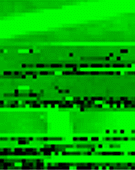
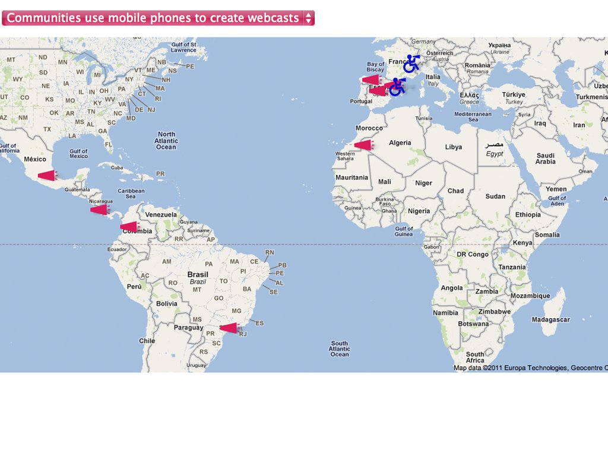

The Godlove Museum, Entropy8Zuper!, 1999-2006
The Lair of the Marrow Monkey, Erik Loyer, 1998
The File Room, Antoni Muntadas, 1994
Weightless Sculpture Project, Martin Sjardijn, 1995
The Tower Trilogy, Barbara Agreste, 2007

ap0202, 1010 1010, 2002

Z, Antoni Abad, 2001
The Genius 2000 Network, Max Herman, 2000